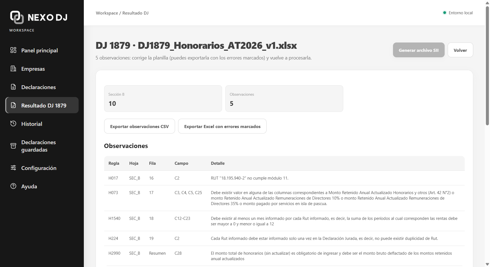

Datos incorrectos
Un RUT mal digitado, un monto que no cuadra o un campo vacío bastan para generar inconsistencias en la declaración.
Cargas tu Excel y NEXO DJ lo revisa en tu propio computador: te dice en qué fila y en qué campo está cada error, sin subir los datos de tus clientes a ningún servidor.

Captura real · datos ficticios
Hay sistemas en los que revisar unos pocos registros significa horas esperando que un servidor termine de procesar. NEXO DJ trabaja en tu computador: cargas el archivo y ves el resultado al instante.
Ilustración referencial
Una declaración jurada puede tener miles de filas. Revisarlas a mano es lento, y basta un descuido para que un error llegue al SII.
Un RUT mal digitado, un monto que no cuadra o un campo vacío bastan para generar inconsistencias en la declaración.
Revisar fila por fila a mano, o esperar a que un sistema lento termine de procesar, puede costarte horas en plena temporada, incluso con pocos registros.
Un error que no detectas antes de presentar puede terminar en una observación del SII y en una rectificación.
NEXO DJ hace el trabajo repetitivo de revisar para que tú te enfoques en corregir y presentar a tiempo.
Revisa formato, estructura, consistencia y reglas de validación, y te indica la fila y el campo exacto de cada problema.
Como todo se procesa en tu computador, ves los errores apenas cargas el archivo.
Las plantillas siguen los formatos del SII, así que no tienes que aprender un sistema nuevo.
Trabaja con todos los contribuyentes que necesites, sin costos adicionales por volumen.
Las declaraciones juradas contienen RUT, montos y datos confidenciales. Con NEXO DJ, esa información se procesa y se guarda solo en tu computador.
Tus archivos no se suben a la nube ni a plataformas de terceros.
Como los archivos no salen de tu equipo, ningún tercero puede ver la información de tus clientes.
Trabajas con planillas Excel que ya conoces y NEXO DJ revisa los datos.
Registra los datos básicos de la empresa o persona con la que trabajarás.
Usa las plantillas Excel de NEXO DJ, adaptadas a los formatos del SII.
Importa el archivo y NEXO DJ revisa cada dato y cada regla de validación.
Corrige lo que NEXO DJ encontró y descarga el archivo preparado para el SII.
La misma declaración, dos formas de prepararla.
Ya conoces el proceso. Esto es lo que cambia según tu caso.
Cuando los vencimientos se juntan, una hora de espera atrasa al cliente siguiente.
Honorarios, remuneraciones y retenciones son información confidencial de tu empresa y tus personas.
Tienes que presentar a tiempo y no te sobra tiempo para aprender un sistema nuevo.
NEXO DJ encuentra los errores de formato y de reglas, y tú dedicas el tiempo a lo que requiere criterio.
NEXO DJ es una aplicación de escritorio para Windows y necesita al menos lo siguiente.
¿Tienes otra duda? Escríbenos a contacto@chiledj.cl.
Es revisarla antes de enviarla: comprobar que el archivo tenga el formato correcto, que los datos sean consistentes y que cumpla las reglas de validación. Así los errores se corrigen antes de que el SII los detecte.
Es una declaración que el SII recibió, pero en la que encontró inconsistencias que debes aclarar o corregir, normalmente con una rectificación. Revisar antes de presentar ayuda a evitarlas.
Problemas de formato y estructura del archivo, datos inconsistentes y reglas de validación que no se cumplen. Cada error aparece con la fila y el campo donde está, para que sepas exactamente qué corregir.
NEXO DJ procesa en tu computador, sin colas ni servidores remotos, así que el resultado aparece apenas cargas el archivo. El tiempo exacto depende del tamaño del archivo y de tu equipo, pero no tendrás que esperar horas.
En tu propio equipo. La información que procesa NEXO DJ se almacena localmente, así mantienes el control de los datos de tus clientes.
No. Es una aplicación de escritorio para Windows: tus archivos se procesan en tu computador y no se suben a servidores externos, por lo que ningún tercero puede ver tus datos confidenciales.
No. NEXO DJ revisa tu información y genera el archivo preparado para el SII. La presentación la sigues haciendo tú, como siempre.
NEXO DJ es un software para preparar y revisar declaraciones juradas, pensado para contadores y empresas. A diferencia de una casa de software que envía la declaración por ti, aquí tú revisas, corriges y descargas el archivo, y lo presentas en el sitio del SII.
Las declaraciones juradas se presentan antes y durante la Operación Renta, entre enero y marzo. NEXO DJ te ayuda a revisarlas en esas semanas, cuando los plazos se juntan y no hay tiempo para rectificar.
Sí. Chile DJ (chiledj.cl) es el sitio de NEXO DJ, el software de declaraciones juradas para Chile.
No. Puedes trabajar con todos los contribuyentes que necesites, sin costos adicionales por volumen.
No. NEXO DJ automatiza la búsqueda de errores y acelera la revisión, pero no reemplaza el criterio de un profesional.
NEXO DJ está en acceso anticipado. Solicita tu acceso escribiéndonos y te contactaremos con los siguientes pasos.
NEXO DJ está en acceso anticipado. Déjanos tus datos y te contactamos con los pasos siguientes.
¿Prefieres escribirnos? contacto@chiledj.cl